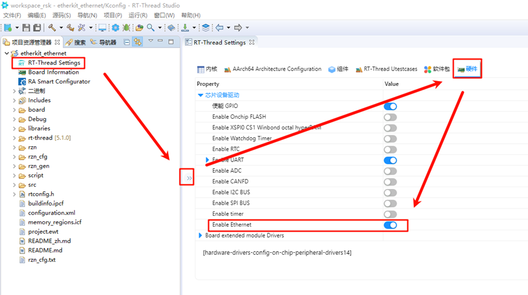
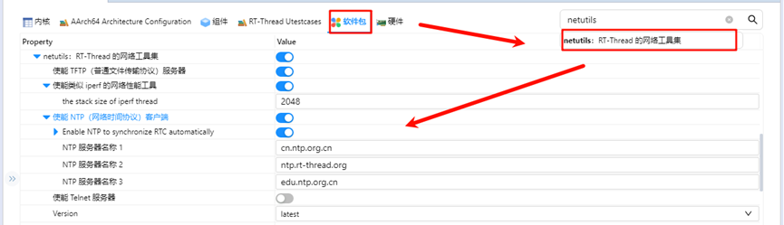
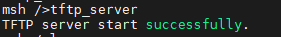
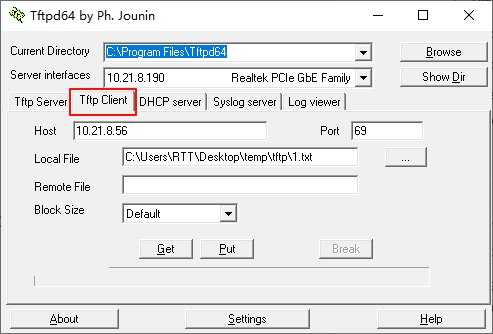
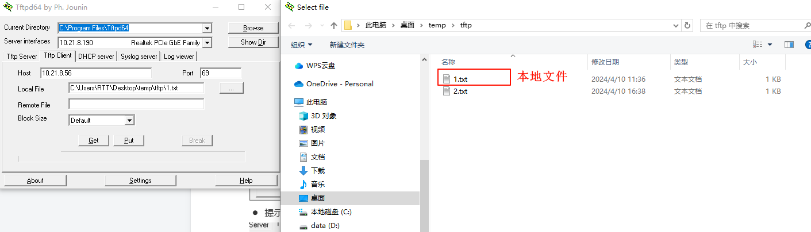
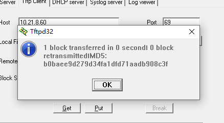
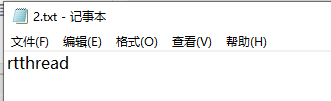
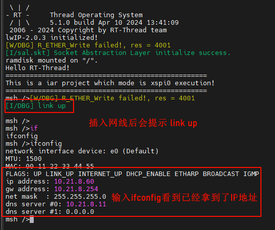

Netutils Usage Instructions
English | 中文
Introduction
This project provides basic Ethernet functionalities, including ping, tftp, ntp, and iperf.
Hardware Connection
To use Ethernet, connect the development board to any one of the three network ports using an Ethernet cable, and the other end should be connected to a network switch that has internet access.
FSP Configuration Instructions
Open the project configuration file configuration.xml and add the r_gamc stack:

Next, click on g_ether0 Ethernet, and configure the interrupt callback function to user_ether0_callback:

Now configure the PHY settings. Select g_ether_phy0, set the common configuration to “User Own Target”, change the PHY LSI address to 1 (refer to the schematic for the exact address), and set the PHY initialization callback function to ether_phy_targets_initialize_rtl8211_rgmii(). Also, set the MDIO to GMAC.

Next, configure g_ether_selector0, set the Ethernet mode to “Switch Mode”, set the PHY link to “Default Active-Low”, and choose “RGMII” for the PHY interface mode.

Configure the Ethernet pin parameters and select the operating mode to RGMII:

Finally, configure ETHER_GMAC:

RT-Thread Studio Configuration
Return to the Studio project, and configure RT-Thread Settings. Click on “Hardware”, find the chip device driver, and enable Ethernet:

In the RT-Thread Settings, search for the netutils software package and enable the tftp, iperf, and ntp features:

Ethernet IP Experiment Results
After flashing the code to the development board, open the serial terminal to view the logs:

TFTP Server Send Test
Install the Tftpd64-4.60-setup software from
netutils-v1.3.3\tools:
Go back to the development board serial terminal and input the
tftp_servercommand to start the TFTP server service:

Open the installed Tftpd64-4.60 software:
Set Host to the development board’s IP address;
Set Port to the TFTP server’s port (default is 69);
Set Local File to the file path where the client will send the file (including filename);
Click Put to send the file to the device.


After clicking “Put”, a message will indicate that the file has been sent:

Back at the development board terminal, input
lsto see that the1.txtfile has been received. You can inputcat 1.txtto check if the file content matches what was sent:Note: Since ramfs is enabled, do not send files larger than 128KB. This is for testing purposes only.

TFTP Receive Test
Back at the development board serial terminal, input
echo "rtthread" 2.txtto create a file with custom content:

You can verify the file creation and content:

Open the installed Tftpd64-4.60 software:
Set Local File to the path where the client will save the received file (including filename);
Set Remote File to the path of the file on the server (including filename), i.e., the file to be received;
Set the TFTP server port to 69;
Click Get to receive the file.

You should see that
2.txthas been successfully received, and its content matches the file in the development board’s file system:

NTP Network Time Synchronization
NTP (Network Time Protocol) is a protocol used to synchronize computer clocks with a global time standard.
NTP Experiment Results
After flashing the code to the development board, open the serial terminal to view the logs:

Input the ntp_sync command, and you should see the network time synchronization result. Input the date command to check that the RTC time has been synchronized: